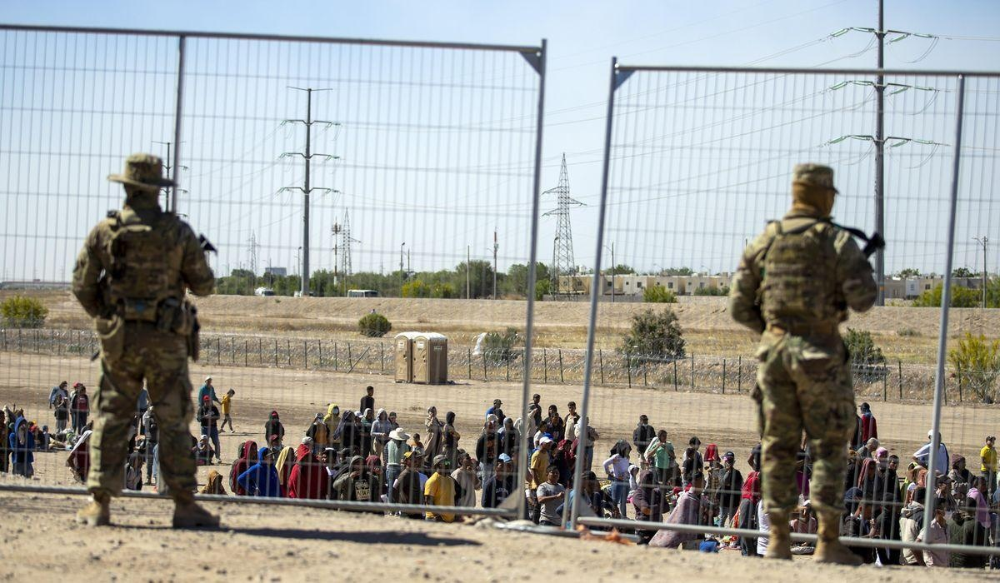

8-year-old girl dies in Border Patrol custody in Texas, as agency struggles with overcrowdingMCALLEN, Texas — A little girl from Panama born with heart problems died at a Border Patrol station Wednesday, the second death of a child from Latin America in U.S. government custody in two weeks. The 8-year-old girl and her family were being held in Harlingen, Texas, in the Rio Grande Valley, one of the busiest corridors for migrant crossings, the Border Patrol’s parent agency, U.S. Customs and Border Protection, said. The girl experienced “ a medical emergency ” and died at a hospital, the agency said. An autopsy has been ordered, said Jesus T. “Chuy” Garcia, Jr., the local judge presiding in the case. The girl’s name was Anadith Tanay Reyes Alvarez, said Honduran Consul José Leonardo Navas, who is based in McAllen, Texas. He said she is from Panama, although her parents are from Honduras. The consul said that she was traveling with her father, mother and two older siblings. She was born with heart problems and was operated on three years ago in Panama, according to her father who spoke with the consul. Customs and Border Protection’s internal affairs office will investigate the girls’ death in Texas, and the Homeland Security Department’s inspector general and Harlingen police have been notified, Miller said. Sgt. Larry Moore, a spokesman for the Harlingen Police Department, said he had no information about the death. Her death comes a week after a 17-year-old Honduran boy, Ángel Eduardo Maradiaga Espinoza, who was traveling alone, died in U.S. Health and Human Services Department custody. In recent weeks the U.S. has struggled with large numbers of migrants coming to the border in expectation of the end of Title 42, a regulation that had curbed migration during the pandemic. Last week, the Border Patrol began releasing migrants in the U.S. without notices to appear in immigration court, instead directing them to report to an immigration office within 60 days. The move spares Border Patrol agents time-consuming processing duties, allowing them to open space in holding facilities. A federal judge in Florida ordered an end to the quick releases. The Border Patrol had 28,717 people in custody on May 10, the day before pandemic-related asylum restrictions expired, which was double from two weeks earlier, according to a court filing. By Sunday, the number had dropped 23% to 22,259, still unusually high. The average time in custody on Sunday was 77 hours, five hours more than the maximum allowed under agency policy. During the Trump administration, the deaths of children in U.S. custody became flashpoints of controversy, calling into question the administration’s efforts to protect the most vulnerable migrants at a time when the U.S. was seeing a rise in the number of families with children coming to the southern border. In December of 2018, a 7-year-old girl , Jakelin Amei Rosmery Caal Maquin, died after being picked up by U.S. Border Patrol authorities in a remote section of New Mexico after she had crossed the border with her father. Just a few weeks later, another boy from Guatemala - Felipe Gomez Alonzo - died on Christmas Eve after being apprehended with his father a week earlier in Texas. Juan de León Gutiérrez, 16, died on April 30 after officials noticed he was sick at a youth detention facility operated by U.S. Department of Health and Human Services. The medical examiner in Corpus Christi, Texas, said Juan had been diagnosed with a rare condition known as Pott’s puffy tumor, which can be caused by a severe sinus infection or head trauma. In May a 2 1/2-year-old boy died after several weeks in the hospital. Wilmer Josue Ramirez Vasquez had been struggling with a high fever and difficulty breathing, and authorities took him to a children’s hospital where he was diagnosed with pneumonia. Then, later in May 2019, a 16-year-old Guatemala migrant died in U.S. custody. Carlos Gregorio Hernandez Vasquez had been held by immigration authorities for six days - twice as long as federal law generally permits - then transferred him to another holding facility even after he was diagnosed with the flu. Later in 2019, Health and Human Services said a 10-year-old girl, Darlyn Cristabel Cordova-Valle, had died the year before in U.S. custody. ___ Santana reported from Washington. Please read our comment policy before commenting. |
 |